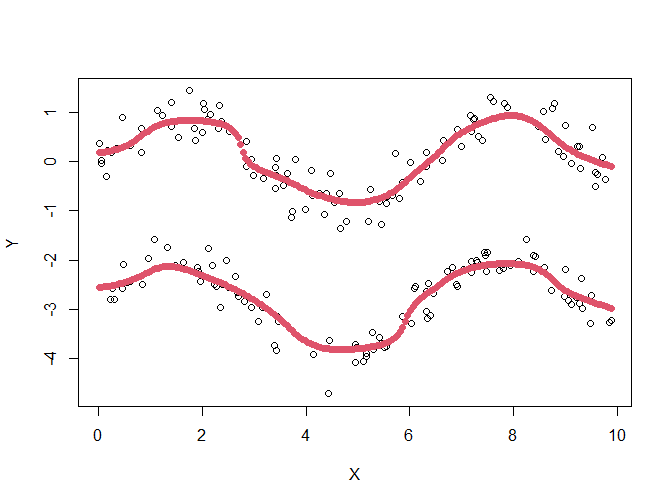
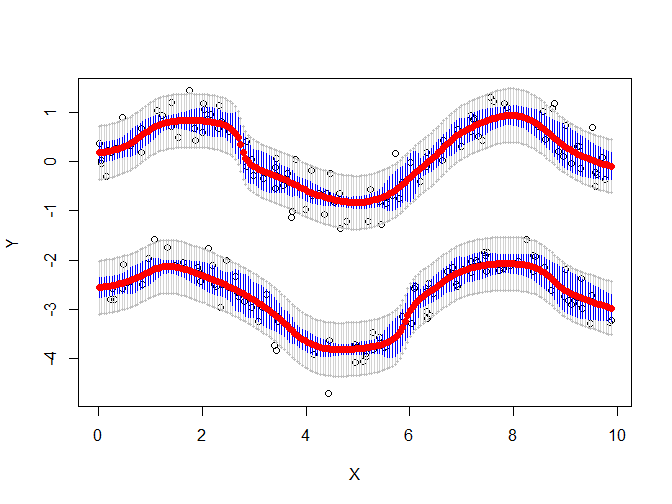
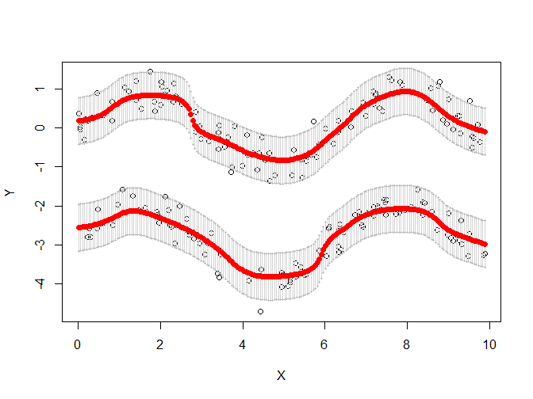

Installation
You can install the development version of MRpms from GitHub with:
About this package
The main goal of this package is to perform modal regression over data sets with a, as of now, one-dimensional covariate. That is: to detect local modes of the response variable \(Y\)’s distribution conditional on \(X = x\), where \(X\) is the covariate.
The basic function included in this package is PMS, which performs the estimation over a given sample using the partial mean shift algorithm:
library(MRpms)
data(twosines) # a data set with two sines at different heights and a normal error with sd = 0.3
modas <- PMS(twosines, h1 = 0.5, h2 = 0.5)
plot(twosines)
plot(modas, pch = 19, col = 2) # a previous plot is needed
Results of partial mean shift over the twosines data set.
A better description of this function can be consulted in the manual: ?PMS.
In addition, it is possible to compute confidence sets for the local modes too —blue lines are pointwise sets, grey area is a uniform confidence set—:
# invisible is just to avoid a big console output
invisible(ConfPMS(twosines, modas = modas, h1 = 0.5, h2 = 0.5, B = 10))
Confidence sets for conditional modes on the twosines data set. In blue, pointwise confidence sets for local modes conditional on a mesh of \(X\) points. In grey, a uniform confidence set for all the modal mainfolds.
And, last, with PredPMS a uniform prediction set is computed for the response variable \(Y\) —in grey—:

\(95\%\) uniform prediction set for \(Y\).
Furthermore, we programmed a bandwith selector, bwselector, which implements two different methods: one taking into account the number of estimated modes and the distance from the estimated set of modes to the sample points, proposed by Zhou, H. and Huang, X. (2019); and other based on the size of uniform prediction sets, as seen in Chen et al. (2016). To reduce computing times, the function performs a Nedler-Mead heuristic search.
In case the user wants a better control over the estimation, like choosing the maximum number of modes or the points where they will be estimated, we also created the ‘mallador’ function. This function can be used to build a mesh with either equidistant or user provided \(X\) points. Every function admits a malla argument, but this must be constructed by mallador function.
# equidistant
malla <- mallador(twosines, k = 10, len = 100) # k: maximum number of modes.
# len: number of covariate points where the estimation will be computed
# user provided
# malla <- mallador(twosines, x.malla = c(0,0.1,0.2,0.4,0.55, 0.6,...), k = 10)